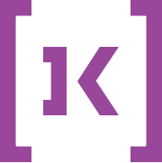

Job search platform
Elinext built a job-search platform integrated with an existing recruitment and assessment system. The product launched in 2023.
Read the case study
Prepared for Koda Staff and Koda TechKoda Tech helps companies hire hard-to-find talent today. The next step is making the digital hiring flow as sharp as the consultant network behind it.
Saw the Senior Software Engineer signal around Koda Staff. That points to delivery load, job-board quality, and recruiter workflow needs behind the search.

Engagement model: a dedicated squad working under Koda's product or technology owner, with weekly demos and one clear backlog.
Duration: a six-week pilot, then a quarterly squad if the gains are clear.
Trace job-board, CV intake, recruiter handoff, and client report paths for senior software and platform roles.
Turn closed job links into useful paths for related roles, saved searches, and direct recruiter contact.
Add one small automation for shortlist notes, candidate status, or client updates around senior technical roles.
Set up QA checks for job search, CV upload, vacancy registration, and mobile page speed risks.
Elinext is a full-cycle software development company, active since 1997, with about 700 in-house specialists and no freelancers. We build web, mobile, QA, DevOps, and AI/ML teams for clients across Europe and the US. For Koda, the fit is a small squad that can work beside your product owner and support recruiter workflows. Elinext holds ISO 9001 and ISO 27001 certifications for quality and security work. Our named customers include Siemens, Broadcom, Volkswagen, TRUMPF, and TUI.
Elinext built a job-search platform integrated with an existing recruitment and assessment system. The product launched in 2023.
Read the case studyElinext designed candidate, vacancy, and admin modules to help manage hiring during active growth.
Read the case study